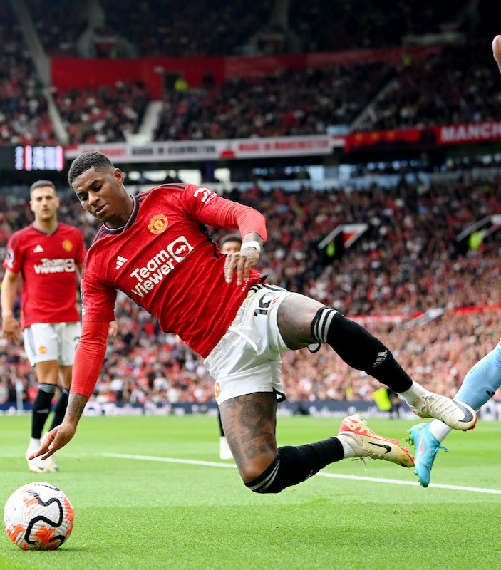
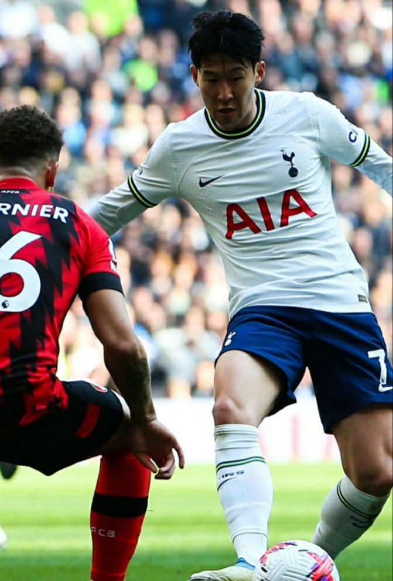

Sheffield United vs Manchester City (review)
The Paul Heckingbottom team who has just been promoted from the championship side to the premier league has suffered back to back loses in their premier league games, depicting a weak start in the premier league.
Facing the back to back premier league champions may look a bit threatning to the team but things turned Thrilling to the fans in the first half of the contest finishing leveled in a 0-0 draw.
City provided just enough efforts to the lead in the first half of the game due to their possession control and attacking routine. All efforts provided by city in the first half of the contest went unproductive as Nathan Ake's finish was ruled out for an off-side build up and Erling Haaland's lead goal was also denied by the wood work leaving the contest leveled.
Things turned out as expected for the visitors as Jack Grealish found his way through to put a pass across to Erling Haaland to finish off with a brilliant header.
The hosts came up with a quick response following the defensive error of kylie Walker which Jayden Boyle didn't hesitate to finish off to level the contest again with the hope of grabbing their first premier league point in the just begun premier league season, to their disappointment, the visitors came up with another build up as kylie Walker was through to Rodri who performed the magic and finished it brilliantly to deny the host their long awaited premier league point.
Manchester utd vs Nottingham Forest(review)
Manchester United comes back from a two goal down early minutes defeat to extend their Old Trafford unbeaten run to 31 matches.
Taiwo Awoniyi has scored in each of his last seven premier league matches and did not hesitate to make a perfect finish following a counter attack from the host's corner kick in just two minutes of the game.Things escalated as Morgan Gibbs White delivered another one to the united's box and found a header from Willy Bolly in less than five minutes of the game. This was quite unacceptable for the Reds as they have suffered just enough loses in their previous matches so they sought after goals, in the surprise of their visitors, they found their first goal following Rashford's breakthrough and delivery in the box finding just Christian Eriksen who didn't fail to connect sweetly leaving the Reds one goal down throughout the first half of the competition.
The second half came up, still having the Reds behind by one goal. In the early minutes of the second half, the host's captain saw a delivery across and he did well to distribute to Casemiro who finished it off to level the contest after his miss in the first half of the game. Things became worse for the visitors following the sending off of Joe Worall after a foul commited against Fernandez, in no time, another foul was commited against Rashford in the box causing a penalty with which the hosts used to continue their Old Trafford unbeaten run and their amazing come back from a two goal down lag.
Bournemouth vs Tottenham (review)
Tottenham defeats the cherries to continue their unbeaten run under the management of Ange Postecoglou.
Dejan Kulusevski and James Maddison keeps the Spurs in their unbeaten run through a two goal defeat to the cherries. The match was played at the Vitality stadium and ended in the favour of Tottenham. James Maddison scored his first goal for the Spurs giving the Spurs a lead in the early minutes of the game. despite having his first attempt blocked by the Cherries defender Max Aarons.
The quest for goals for the hosts resulted in fast game play between the clubs, thereby producing Richarlison's attempt but could not connect leaving the game in a one goal lead for the visitors. All the attempts made by the host was proved abortive when Udogie provided an assist for Kulusevski who made a perfect strike and netted the second goal for the Spurs. The match ended with a 2-nill defeat for the spurs.
Chelsea vs Luton Town (preview)

The blues went head to head with Luton Town in a premier league game on friday at Stamford bridge in London. The host played up to expectations in a 3-nill win featuring Raheem sterling's brace and Nicolas Jackson's first goal for the club in the 75th minute of the game.
The first half of the competition ended in a 1-nill goal from Chelsea. Chelsea's play was generally good during the game as they where able to control most of the possession and maintained a team play that produced an amazing result. Chelsea played a 3-4-2-1 formation against the Luton towns 5-3-2 formation.
During the play, Sanchez was between chelsea posts and Thiago silver in the center of defence along side Disasi and lewi Colwill leaving Raheem sterling and Enzo Fernandez in the flanks and Nicolas Jackson as the striker. Moices Caicedo, Conor Gallagher, Malo Gusto and Chillwell had the midfield well under control.